by Alan Parker
CRC Press, CRC Press LLC
ISBN: 0849371716 Pub Date: 08/01/93
|
|
Algorithms and Data Structures in C++
by Alan Parker CRC Press, CRC Press LLC ISBN: 0849371716 Pub Date: 08/01/93 |
| Previous | Table of Contents | Next |
Hence, in the program, all the functions are available to each instance of the rectangle created. This availability arises because the functions are declared as public in each class and each derived class is also declared public. Without the public declarations C++ will hide the functions of the base class from the derived class. Similarly, the data the functions access are declared as protected which makes the data visible to the functions of the derived classes.
The first peg in the program is created with rectangle peg(80,0,40,180). The gray scale for this peg is changed from the default of 0.8 to 0.6 with peg.set_gray(0.6). The peg is drawn to the file with peg.draw(file). This draw operation results in the following lines placed in the file:
The PostScript® action taken by the operation is summarized in Figure 2.3. Note that the rectangle in the figure is not drawn to scale. The drawing of the base and the discs follows in an analogous fashion.
Code List 2.6 Program to Display Tower of Hanoi
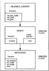
Figure 2.2 Class Structure
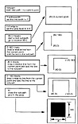
Figure 2.3 PostScript Rendering
Code List 2.7 File Created by Program in Code List 2.6
This section presents a recursive solution to providing an upper bound to the number of 2-input NAND gates required to implement a boolean function of n boolean variables. The recursion is obtained by noticing that a function, f(x1,x2,...,xn) of n variables can be written as
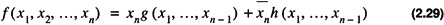
for some functions g and h of n - 1 boolean variables. The implementation is illustrated in Figure 2.4.
The number of NAND gates thus required as a function of n, C (n), can be written recursively as:
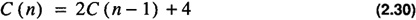
The solution to the simple recurrence relation yields, assuming a general form of C(n) = λn followed by a constant to obtain the particular solution
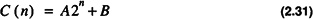
Applying the boundary condition C (1) = 1 and C (2) = 6 one obtains
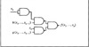
Figure 2.4 Recursive Model for Boolean Function Evaluation
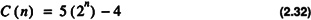
This section presents some fundamental definitions and properties of graphs.
Definition 2.7
A graph is a collection of vertices, V, and associated edges, E, given by the pair
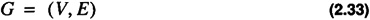
A simple graph is shown in Figure 2.5.
In the figure the graph shown has
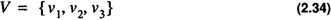
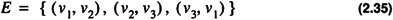
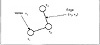
Figure 2.5 A Simple Graph
Definition 2.8
The size of a graph is the number of edges in the graph
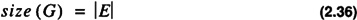
Definition 2.9
The order of a graph G is the number of vertices in a graph
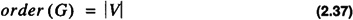
For the graph in Figure 2.5 one has
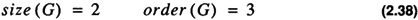
Definition 2.10
The degree of a vertex (also referred to as a node), in a graph, is the number of edges containing the vertex.
Definition 2.11
In a graph, G = (V, E), two vertices, v1 and v2, are neighbors if
(v1,v2) ∈ E or (v1,v2) ∈ E

In the graph in Figure 2.5 v1 and v2 are neighbors but v1 and v3 are not neighbors.
Definition 2.12
If G = (V1, E1) is a graph, then H = (V2, E2) is a subgraph of G written if and .
A subgraph of the graph in Figure 2.5 is shown in Figure 2.6.
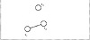
Figure 2.6 Subgraph of Graph in Figure 2.5
The subgraph is generated from the original graph by the deletion of a single edge (v2, v3).
Definition 2.13
A path is a collection of neighboring vertices.
For the graph in Figure 2.5 a valid path is
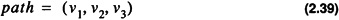
Definition 2.14
A graph is connected if for each vertex pair (vi,vj) there is a path from vi to vj.
The graph in Figure 2.5 is connected while the graph in Figure 2.6 is disconnected.
Definition 2.15
A directed graph is a graph with vertices and edges where each edge has a specific direction relative to each of the vertices.
An example of a directed graph is shown in Figure 2.7.
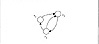
Figure 2.7 A Directed Graph
The graph in the figure has G = (V, E) with
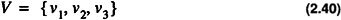
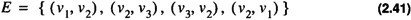
In a directed graph the edge (vi, vj) is not the same as the edge (vj, vi) when i ≠ j. The same terminology G = (V, E) will be used for directed and undirected graphs; however, it will always be stated whether the graph is to be interpreted as a directed or undirected graph.
The definition of path applies to a directed graph also. As shown in Figure 2.8 there is a path from v1 to v4 but there is no path from v2 to v5.
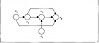
Figure 2.8 Paths in a Directed Graph
A number of paths exist from v1 to v4, namely
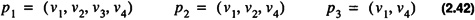
| Previous | Table of Contents | Next |
){kind=link}
){kind=link}
){kind=link}
){kind=link}
){kind=link}
){kind=link}
){kind=link}
){kind=link}
){kind=link}
){kind=link}
){kind=link}
){kind=link}
){kind=link}
){kind=link}